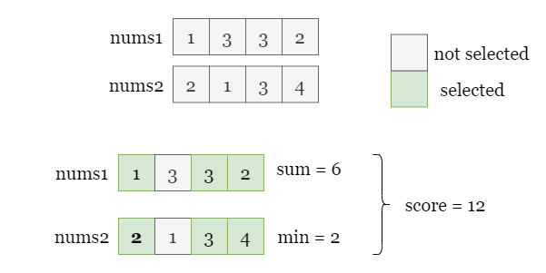
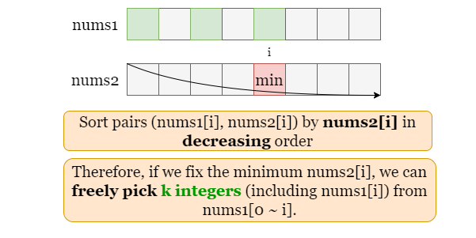
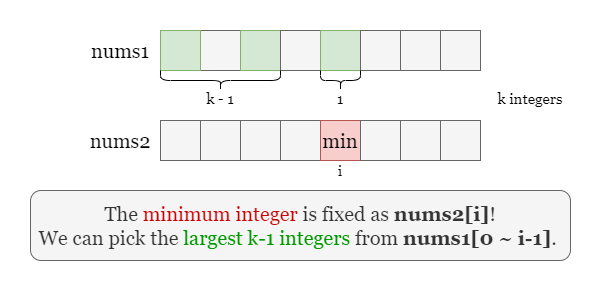

1 / 3
As shown in the picture below, if we select the index 0, 2, and 3, the score
is defined as the product of the following two terms:
nums1[i], sum = 1 + 3 + 2 = 6.nums2[i], min = min(2, 3, 4) = 2.
Thus the score equals 6 * 2 = 12. Our task is to find the maximum score if we pick k
indexes.
Start with a brute force approach, if we find the maximum score by checking all groups of indexes with size
k, there are (nk)=n!k!(n−k)!{n \choose k} = {{n!}\over{k! (n - k)!}} possibilities. We can't
afford to check them one by one.
Let's first focus on the minimum of the selected elements from nums2. If we pick nums2[i]
as the minimum, it means the other k - 1 selected elements from nums2 are larger or equal
to nums2[i].
We can thus take advantage of this restriction on the selection by sorting nums2, which can reduce the
time complexity. Assume that we have sorted nums2 by decreasing order (Note that we can't change the
relative order of nums1 and nums2, so its better to store each pair as (nums1[i],
nums2[i]) and sort the collection of pairs according to nums2[i]).
As shown in the picture below, if we pick nums2[i] (colored in red) as the minimum selected element from
nums2, we can freely select the rest k - 1 indexes to the left of i without
changing the second term: minimum of the selected elements from nums2.

Recall the definition of the score, the second term has been fixed as nums2[i], so we can maximzie the
total score by maximizing the first term, that is, by selecting the maximum k elements from
nums1 including nums1[i].

This can be done efficiently by maintaining a min-heap that always contains the largest k elements we
have seen. Whenever we pick a new nums2[i] as the minimum from nums2, we shall remove one
element from the heap (which represents removing a nums1 number and add nums[i] to it. Now
the heap contains the largest k element including nums1[i] again, the current score equals
the sum of this heap times nums2[i].
We can iterate over nums2 and repeat the above process. At each step, we calculate the current score and
update answer as the maximum score we have met.
Take the following slides as an example:
Store every pair (nums1[i], nums2[i]) in array pairs, and sort pairs
by the second element (nums2[i]) in decreasing order.
Use a min-heap top_k_heap to store the first k nums1[i] and a variable
top_k_sum to store their sum.
Initialize answer as the sum of elements in top_k_heap (i.e. top_k_sum)
times pairs[k - 1][1].
Iterate over indices starting from k, at each index i:
top_k_heap and from top_k_sum.nums1[i] to the heap and top_k_sum.top_k_heap (i.e. top_k_sum) times nums2[i],
and update answer as the maximum score we have met.
Return answer.
Java
class Solution {
public long maxScore(int[] nums1, int[] nums2, int k) {
// Sort pair (nums1[i], nums2[i]) by nums2[i] in decreasing order.
int n = nums1.length;
int[][] pairs = new int[n][2];
for (int i = 0; i < n; ++i) {
pairs[i] = new int[]{nums1[i], nums2[i]};
}
Arrays.sort(pairs, (a, b) -> b[1] - a[1]);
// Use a min-heap to maintain the top k elements.
PriorityQueue topKHeap = new PriorityQueue<>(k, (a, b) -> a - b);
long topKSum = 0;
for (int i = 0; i < k; ++i) {
topKSum += pairs[i][0];
topKHeap.add(pairs[i][0]);
}
// The score of the first k pairs.
long answer = topKSum * pairs[k - 1][1];
// Iterate over every nums2[i] as minimum from nums2.
for (int i = k; i < n; ++i) {
// Remove the smallest integer from the previous top k elements
// then ddd nums1[i] to the top k elements.
topKSum += pairs[i][0] - topKHeap.poll();
topKHeap.add(pairs[i][0]);
// Update answer as the maximum score.
answer = Math.max(answer, topKSum * pairs[i][1]);
}
return answer;
}
}
Python3
class Solution:
def maxScore(self, nums1: List[int], nums2: List[int], k: int) -> int:
# Sort pair (nums1[i], nums2[i]) by nums2[i] in decreasing order.
pairs = [(a, b) for a, b in zip(nums1, nums2)]
pairs.sort(key = lambda x: -x[1])
# Use a min-heap to maintain the top k elements.
top_k_heap = [x[0] for x in pairs[:k]]
top_k_sum = sum(top_k_heap)
heapq.heapify(top_k_heap)
# The score of the first k pairs.
answer = top_k_sum * pairs[k - 1][1]
# Iterate over every nums2[i] as minimum from nums2.
for i in range(k, len(nums1)):
# Remove the smallest integer from the previous top k elements
# then ddd nums1[i] to the top k elements.
top_k_sum -= heapq.heappop(top_k_heap)
top_k_sum += pairs[i][0]
heapq.heappush(top_k_heap, pairs[i][0])
# Update answer as the maximum score.
answer = max(answer, top_k_sum * pairs[i][1])
return answer
Let nn
be the length of the input array nums1.
Time complexity: O(n⋅logn)O(n \cdot \log n)
We need to sort nums2, it takes O(n⋅logn)O(n \cdot \log n).
Then we iterate over pairs of length n. At each iteration step
i, we remove the smallest element from top_k_heap and add one element
pairs[i][0] to it. Both the inserting and removing operations to priority queue of size
kk take O(logk)O(\log k) time.
To sum up, the overall time complexity is O(n⋅logn)O(n \cdot \log n), because k≤nk \leq n.
Space complexity: O(n)O(n)
(nums1[i], nums2[i]) in a 2-d array pairs, it takes O(n)O(n) space.